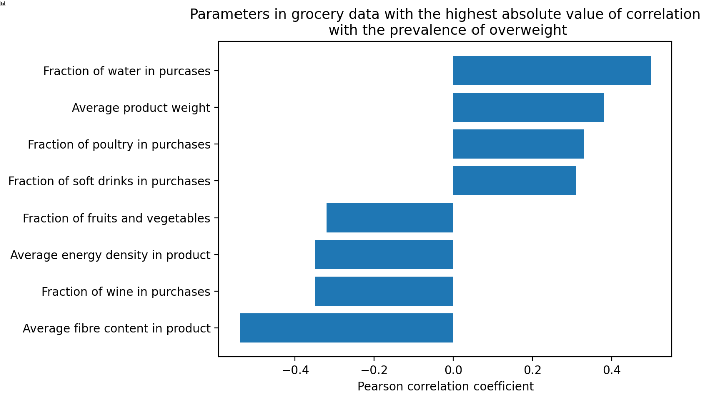

According to the WHO, nutrition not only plays a critical part in health and well being it also is related to lower risk non-communicable diseases (such as diabetes and cardiovascular disease) and longevity.
We analyse and visualise grocery and food consumption data at scale to shed light onto health and diet information of London’s population. This information is important for a variety of stakeholders: Cities and public officials can monitor public health, retailers gain insight on consumption patterns of consumers and citizens can be informed about the nutritional content of foods.
Foodie is aimed at promoting nutrition-related health of populations and informed choices of citizens by visualising grocery store data.

The insight obtained can help create health-conscious food recommender systems or food consumption can be linked to health outcomes.
Tesco groceries data suggests aggregated information about purchases in London wards, including parameters such as average fiber content in the purchased item, the average volume of a drink, or fraction of poultry items in purchases. It offers a wide range of possibilities for analyzing the diet. One of the related problems is children overweight, it is quite relevant and researched topic. Thus, we research differences between London boroughs in terms of diet and the relation between diet and the children overweight.
In terms of analysis, the pearson coefficient revealed linear correlation between the Tesco groceries data for different wards and children overweight disease. We have found considerably large positive correlation between several variables, such as fraction of water in purchases, average weight product or fraction of poultry in purchases.
We applied a nonlinear model to evaluate more complex dependencies between Tesco data and children's overweight disease. Correlation analysis show quite a weak negative correlation between the fraction of tea and coffee and the target variable. However, the nonlinear regression finds that fraction of tea and coffee is top-2 parameters to estimate the children overweight. Thus we conclude that the fraction of tea and coffee can explain a great part of the variance in overweight data, but the dependence is nonlinear.
We reduced the high-dimensional nutrient parameters space describing London boroughs into two-dimensional space. Results are presented in figure below. From the plot, one can conclude whether the two boroughs are similar or not, and the character of difference. For instance, Enfield differs from Newham in the same way it differs from the Redbridge (as they lie on the same line), but to different extents. On the other hand, Enfield differs from Newham in the different way it differs from Kensington and Chelsea - for the first pair, the first dimension changes, for the second pair - the second dimension.
We also performed the K-Means clusterization algorithm in the reduced space. Defined clusters are presented as below. We have tried a different number of clusters and concluded that three clusters are the most optimal variant as it provides more information about boroughs’ similarities and differences.
Our website also provide an interactive platform where users can learn and engage with nutrition-related health. Have a look at the Maps page and start exploring!